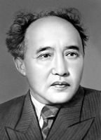

Роман-эпопея1942–1956
Абай жолы
Абай Құнанбайұлының өмірі мен заманы туралы төрт кітаптан тұратын ұлы туынды.

1897 — 1961
Қазақтың ұлы жазушысы, ғалымы және драматургі
Мұхтар Омарханұлы Әуезов — қазақ әдебиетінің классигі, «Абай жолы» роман-эпопеясының авторы. Оның шығармалары қазақ халқының рухани қазынасына айналып, әлемнің ондаған тіліне аударылды.
Өмірбаяны
Семей даласынан шыққан жас жігіттен әлемге танылған жазушы әрі ғалымға дейінгі жол.
28 қыркүйекте қазіргі Шығыс Қазақстан облысы, Абай ауданы, Бөрілі деген жерде ауқатты әрі сауатты отбасында дүниеге келді.
Семей мұғалімдер семинариясын бітірді. Жастайынан Абайдың өлеңдерімен сусындап өсті, әдебиетке деген қызығушылығы оянды.
Ленинград (қазіргі Санкт-Петербург) университетінің филология факультетін, кейін Ташкенттегі аспирантураны тәмамдады.
Қазақ университетінде ұстаздық етті, профессор, ҚазССР Ғылым академиясының академигі болды. Абайтану ғылымының негізін қалады.
27 маусымда Мәскеу қаласында қайтыс болды. Артында бай әдеби және ғылыми мұра қалдырды.

Басты шығармасы
«Абай жолы» — Мұхтар Әуезовтің әлемге танымал басты туындысы. Бұл эпопея ұлы ақын Абай Құнанбайұлының өмірі мен заманын, XIX ғасырдағы қазақ халқының тұрмыс-тіршілігін, әдет-ғұрпын кең көлемде суреттейді.
Шығарма қазақ халқының энциклопедиясы деп аталады. Ол арқылы Әуезов қазақ прозасын әлемдік деңгейге көтерді әрі ұлттық рухани мұраны мәңгілікке қалдырды.
Шығармашылығы
Романдар, драмалар, повестер мен ғылыми зерттеулер — Әуезовтің бай әдеби мұрасы.
Абай Құнанбайұлының өмірі мен заманы туралы төрт кітаптан тұратын ұлы туынды.
Қазақ халқының аңызына негізделген, екі ғашықтың тағдыры туралы трагедия.
Қазақ әйелінің тағдыры мен ішкі әлемін шебер бейнелеген туынды.
1916 жылғы ұлт-азаттық көтерілісі оқиғаларын суреттейтін шығарма.
Махаббат пен әлеуметтік теңсіздік тақырыбын көтерген драмалық туынды.
Абайдың өмірі мен шығармашылығын зерттейтін абайтану ғылымының негізін қалады.
Қазақ қоғамына қосқан үлесі
Әуезовтің еңбектері қазақ халқының мәдени және рухани өміріне терең әсер етті.
Қазақ прозасын әлемдік деңгейге көтеріп, ұлттық романистиканың негізін қалады.
Абайтану ғылымын қалыптастырып, академик дәрежесіне жетті, фольклорды зерттеді.
Қазақ театры мен драматургиясының дамуына зор үлес қосты, көптеген пьесалар жазды.
Ұстаз ретінде жас буынды тәрбиелеп, қазақ халқының рухани дамуына жол ашты.
Галерея және дәйексөздер


Адамдық борышың — халқыңа қызмет ету.
Өнер — халықтың жан-дүниесінің айнасы.
Білім — таусылмайтын қазына, ал оны игеру — өмірлік міндет.